Prototype Shots
Some unused "no direction" arrows.
Originally we planned to use the ? symbol, but decided it would have been best to use a four direction arrow for clarity.
As you can see, the four arrow design is ever so slightly different too.
Originally we planned to use the ? symbol, but decided it would have been best to use a four direction arrow for clarity.
As you can see, the four arrow design is ever so slightly different too.
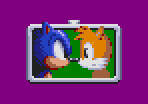
Old "tied" flag design.
The shaping is wrong for Sonic and Tails and overall it looked ugly. To be fair, the current design in the ROM isn't brilliant either, but Sonic 3's palette is quite a pain by comparison to the older games.
The shaping is wrong for Sonic and Tails and overall it looked ugly. To be fair, the current design in the ROM isn't brilliant either, but Sonic 3's palette is quite a pain by comparison to the older games.
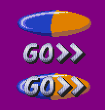
LBZ's mini-game has a "GO" sign, it also used to have a backdrop similar to that of the HUD.
It went unused as we felt it created a clash.
It went unused as we felt it created a clash.
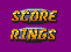
The original HUD design.
We weren't sure what design we wanted at the time, this seemed very bland. I remember there being a kids show on TV called 50/50.
While not a fan of it, I remember the design being an oval with half being blue and the other half being yellow. This ended up being our "staple" for lack of a better word.
We weren't sure what design we wanted at the time, this seemed very bland. I remember there being a kids show on TV called 50/50.
While not a fan of it, I remember the design being an oval with half being blue and the other half being yellow. This ended up being our "staple" for lack of a better word.

The "& Knuckles" logo, while still the same shape now, used to be red/green to help separate it from the SONIC 3 part of the logo. This was not for the title screen, this was actually for the splashes between the level select effects.
We ended up not using it due to palette limitations.
We ended up not using it due to palette limitations.

Some old mock up images of the mini-game level select. Since these mini-games had rules, we felt they needed some sort of explanation written onto the cards to clarify the rules.
Unfortunately we never came up with a nice enough design and simply ran out of time. Which is why the mini-game cards use the same cards as the battle race level select.
Maybe something like this will eventually end up in the final build, we'll see. It depends on how well people respond to the games and how easily they get confused.
Unfortunately we never came up with a nice enough design and simply ran out of time. Which is why the mini-game cards use the same cards as the battle race level select.
Maybe something like this will eventually end up in the final build, we'll see. It depends on how well people respond to the games and how easily they get confused.
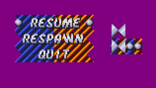
The old pause menu, this one DID actually make its way into the ROM, and was used for a very long time. We didn't have much VRAM at the time, so we opted for optimising the tiles as much as possible, and as a result, couldn't use sprites.
We ended up removing this and using the HUD's VRAM space so we could use sprites instead.
We ended up removing this and using the HUD's VRAM space so we could use sprites instead.

Some old backgrounds for the title screen, the first one was from waaaaay back. This was before the logo had even been decided, we didn't even have a main menu, and the ident/splash screens weren't even in.
We felt it looked too tacky, dithering was way too obvious and clear, and it just didn't sit right. Given that we didn't have a logo made the situation worse.
The second one is the one currently in use, the only difference is, we ended up using a black background instead of this light grey one, we also cut out transparent lines in the zig-zag too.
One thing to note, this zig-zag originally was not a power of 2, thus to wrap it we had to use the divide instruction and obtain the remainder. Due to heavy amounts of CPU time required, we ended up modifying it to be a power of two so it could be wrapped better.
We felt it looked too tacky, dithering was way too obvious and clear, and it just didn't sit right. Given that we didn't have a logo made the situation worse.
The second one is the one currently in use, the only difference is, we ended up using a black background instead of this light grey one, we also cut out transparent lines in the zig-zag too.
One thing to note, this zig-zag originally was not a power of 2, thus to wrap it we had to use the divide instruction and obtain the remainder. Due to heavy amounts of CPU time required, we ended up modifying it to be a power of two so it could be wrapped better.

Title logo text progressions.
Again, we hadn't settled on a clear design and we experimented with a few different designs.
You can see the very last unused design is the same as the final, except the yellow/blue are swapped.
Again, we hadn't settled on a clear design and we experimented with a few different designs.
You can see the very last unused design is the same as the final, except the yellow/blue are swapped.
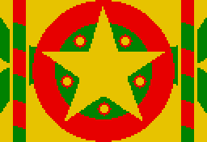
An old star transition card design from the main menu, the Christmassy looking vertical bars would animate, one going up, one going down.

Here is the star itself animating and rotating. This was in the final ROM at one point, but the amount of memory required to keep it was unexpectedly too much.
Maybe we'll re-implement it once we've found a way around every emulators odd desire to limit the ROM to 4MB instead of allow emulation for /DTAK to access the 8 - 10MB mark.
Maybe we'll re-implement it once we've found a way around every emulators odd desire to limit the ROM to 4MB instead of allow emulation for /DTAK to access the 8 - 10MB mark.

An old cog design, this one uses a metallic reflected inlay. Unfortunately, because the inlay doesn't rotate with the cog, it has an odd appearance, so we dropped it.
Unused Level
We were inspired by Disney's 1991 film "Beauty and the Beast". The background visuals were outstanding, and we thought it would be so awesome to have a level in a Sonic game just like that. We ended up running out of time though, and the level had to be scrapped, though we have decided to make a complete different level altogether, so, this level ended up being a waste of time, but at least you get to see what could've been.
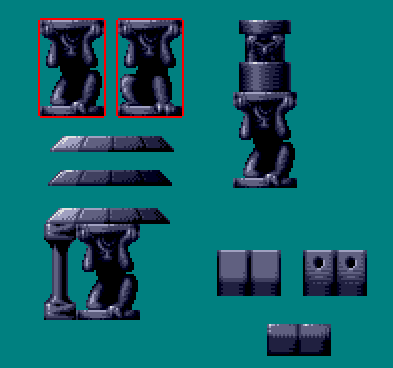
Some gargoyles and various bricks, some used, some not.
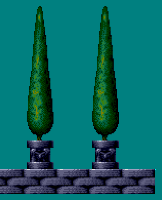
Trees, and some unused flooring.
The floors looked too repetitive and bland, and ended up being swapped for a different type of floor which would be more elaborate.
The floors looked too repetitive and bland, and ended up being swapped for a different type of floor which would be more elaborate.

Some pillars and bricks to support the level chunks.

Unused window looking bricks.
These were originally designed for a mode 7 test ROM which ended up not being released. They were repalette'd and used here.
These were originally designed for a mode 7 test ROM which ended up not being released. They were repalette'd and used here.

A full bridge chunk, using the brick pillars, trees and gargoyles in full.
This ended up making its way into the ROM initially, though the floor positions were lowered/raised a bit.
This ended up making its way into the ROM initially, though the floor positions were lowered/raised a bit.

Some plan to have the floor wrap around the pillars (similar to MGZ's pillars).
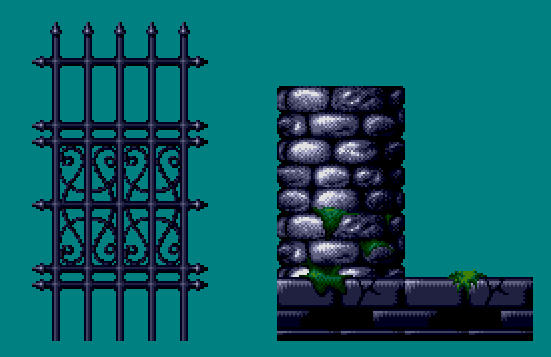
There were plans to have a garden of beautiful plants and grass, this is as far as it got.
Didn't even get to designing a single plant in the end, but at least you got a gate!
Didn't even get to designing a single plant in the end, but at least you got a gate!
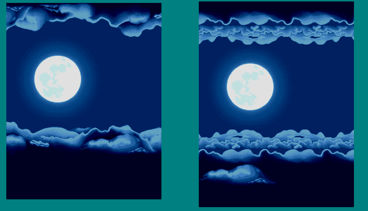
Some BG clouds and a moon. The left one was the original one, unfortunately it took up way too much VRAM.
We ended up having to heavily condense the clouds and make them far more repetitive than we wanted. It still looks nice though.
We ended up having to heavily condense the clouds and make them far more repetitive than we wanted. It still looks nice though.
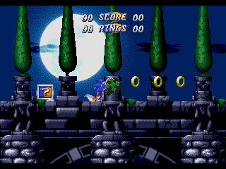
An animation of the outdoor stuff in action. Here you can see a super cool effect with the clouds moving across the moon.
These are not prerendered/animated frames, there was actually quite a bit of software rendering going on to ensure the clouds would appear transparent and showing the moon behind them.
We came up with a neat method that wouldn't cost too much CPU time, and the results were outstanding!
These are not prerendered/animated frames, there was actually quite a bit of software rendering going on to ensure the clouds would appear transparent and showing the moon behind them.
We came up with a neat method that wouldn't cost too much CPU time, and the results were outstanding!
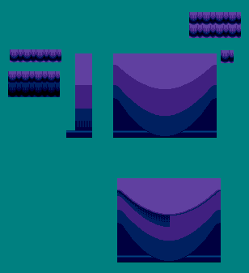
Some indoor curtains.

Some indoor pillars.
The far left one became unused as it was too simple, and the far right one was an experiment which I felt was too basic.
The far left one became unused as it was too simple, and the far right one was an experiment which I felt was too basic.

Some inside bricks and a window of sorts, though I was never too comfortable with these as they were far too repetetive.
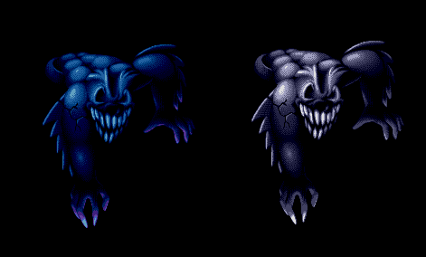
Meet Fred!
He ended up taking alot of VRAM. Likewise, he was larger than the screen vertically.
These statues were going to be normal looking, and when a thunder flash would occur, the image of Fred would briefly take their place until the lights came back on.
He ended up taking alot of VRAM. Likewise, he was larger than the screen vertically.
These statues were going to be normal looking, and when a thunder flash would occur, the image of Fred would briefly take their place until the lights came back on.
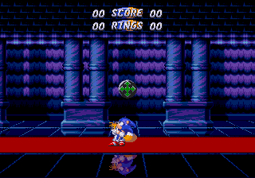
An in-game shot of the carpet on the floor of the hallway.

A small diagramatic plan on the flooring section.
The way it's setup allows reflections to be seen from objects and the characters. The reflections would appear behind the mesh.
The way it's setup allows reflections to be seen from objects and the characters. The reflections would appear behind the mesh.
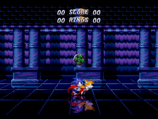
An animation of the indoor stuff in action. You can see the floor scrolling and resizing as you jump and move along it.
A few games have done the floor technique scrolling it horizontally, but few have done the vertical resizing with it.
The pillars and their shadows on the curtains is perhaps my favourite part of it.
A few games have done the floor technique scrolling it horizontally, but few have done the vertical resizing with it.
The pillars and their shadows on the curtains is perhaps my favourite part of it.
Planning and Ideas
We thought it would be really cool to share some dialogue and images of the project when we first started. Here are a few strips of dialogue while planning, much of these happened at different times, but we've felt to combine them into one large text.

MarkeyJester
2017/04/18
Alright then~
So where do we begin?
I was just thinking.
In the original battle race, the screen is positioned such that it's inbetween the two players.
What if the screen followed the one who's ahead?
On X and Y individually though.

Natsumi
2017/04/18
yeah I was thinking, it could only go, so that the last quarter of screen is still ahead of the player who is first
MarkeyJester
2017/04/18
I was also thinking of having a sortof, line map to indicate the correct path.
Natsumi
2017/04/18
we could have it only 4 ways, 8 ways, or an angle
MarkeyJester
2017/04/18
I was thinking of that.
But I am wondering if a path line would be better.
Lemmy think it out.
If I can find a... map of EHZ.

Kinda like that.
A single bit would represent a block.
Not sure about direction though.
Natsumi
2017/04/18
huh
MarkeyJester
2017/04/18
Maybe it would be best to stick to events routines after all.
I'm already seeing flaws in my plan dX
I think what we could do, is however is furthest in their respective path wins.
Either that, or have a single path has higher priority kinda thing.
Not sure which gets to decide.
We could go with the one that gets to the finish quicker...
Natsumi
2017/04/18
oh right
we could favour upper paths, but then see which one is being travelled furthest
MarkeyJester
2017/04/18
But I'd also say sections with large open areas like Chemical Plane 2's area before the water rising section.
Those would be a bit difficult to decide
Natsumi
2017/04/18
which one goes quicker can be challenged
and can be confusing
MarkeyJester
2017/04/18
We'll do it be shortest pixel length to get to destination.
Natsumi
2017/04/18
we need a damn complex system =O
MarkeyJester
2017/04/18
Hang on...
Natsumi
2017/04/18
nah that doesnt sound really reasonable
the player wont know
they will think its unfair
upper paths are hardest to get to, so in a way, that should be rewarded imo
MarkeyJester
2017/04/18
They will know, because of your idea about the direction arrows on screen, telling them which way is best/fastest
Natsumi
2017/04/18
oh yeah true
but it may feel cheap
MarkeyJester
2017/04/18
That's true.
Natsumi
2017/04/18
so I would always use the path that is hardest to get to
minus a few that are more luck based
I can foresee people being pissed about the CPZ2 thing that is at the top for example
or the one weird path that almot nobody knows about and it goes backwards
MarkeyJester
2017/04/18

Like this.
Up would win, because it's a little more difficult (or time consuming) to get to.
Natsumi
2017/04/18
yeah, but it also needs to account to going down, and someone standing on the upper path
MarkeyJester
2017/04/18
?
Natsumi
2017/04/18
say, the other player just stands on the ledge
while the other player jumps down
obviously the player just standing around should die
MarkeyJester
2017/04/18
Why? I mean to say, if it bothered the other player, the other player should go the same way.
Natsumi
2017/04/18
hat I am thinking, is that the point is to keep moving and either trapping someone or just going faster than them
MarkeyJester
2017/04/18
The arrows clearly state it's the right direction.
Hmmm... What we could do, is store the player's X and Y positions for the next frame.
And if one player goes off screen, the one who's X and Y didn't change, would die.
So the players have to keep moving in some way or another.
The X and Y positions changing per frame would also count platforms though...
Moving ones.
Natsumi
2017/04/18
true
we could use the recorded position table
MarkeyJester
2017/04/18
I mean, if neither of them move, then no problem.
Because neither go off screen.
But if one moves and the other does not.
Then the one not moving will die.
The only flaw I can see, is if they're both not moving, say, waiting for a platform, and the other decides to go the other way.
Natsumi
2017/04/18
if both move, the one that moves to the correct direction more, will not die
MarkeyJester
2017/04/18
Or certain devices that might charge you up but keep you in place.
I think MPZ's tune blaster thingy does this.
Natsumi
2017/04/18
we can use both speed and change in position in account
for example those corks should make the one who falls from the lose anyway
MarkeyJester
2017/04/18
Do they effect the speed though?
Natsumi
2017/04/18
I dont know
they should keep Sonic moving but in place
MarkeyJester
2017/04/18
corks?
Natsumi
2017/04/18
err, I mean those things in MPZ that you walk forwards and they move up
MarkeyJester
2017/04/18
Oh, the screws.
They shouldn't matter too much, as the Y position is changing.
But yeah, it's probably not frequenty enough.
Do "all" devices/objects do this though?
I know most will.
But it'll be our luck that some device won't.
Natsumi
2017/04/18
so we're doing S2?
MarkeyJester
2017/04/18
Well, we don't have to.
I'm only using S2 as an example.
Natsumi
2017/04/18
we can, just asking
would be interesting to do S3K as its not been done yet
MarkeyJester
2017/04/18
It would, yeah.
Is there enough VRAM in Sonic 3 & K to do the HUD and arrows?
I could program a brand new title screen.
Natsumi
2017/04/18
we can remove parts of the HUD to make room
MarkeyJester
2017/04/18
Will it be enough though?
Natsumi
2017/04/18
we'll make it enough
say what, we need some prototype code the for events and the camera
HUD's gonna be super easy for me to work out
MarkeyJester
2017/04/18
Perhaps we should have 5 piece of information
X position, Y position, X range, Y range, Direction
Natsumi
2017/04/18
range how
MarkeyJester
2017/04/18
I'll explain with an illustration.

Natsumi
2017/04/18
oooh right, that makes sense yeah
MarkeyJester
2017/04/18
X = 0140 Y = 0200
X and Y ranges are just added to the X and Y.
To create a sorta "box".
A range, a space, an area.
Natsumi
2017/04/18
also, the angle maybe should be used to calculate the optimal point in this rectangle to go to
MarkeyJester
2017/04/18
Exactly.
Natsumi
2017/04/18
but it should probably extend beyond the rectangle, so to not create weird bugs
MarkeyJester
2017/04/18
We can make these boxes big/small depending on how precise we want it.
Natsumi
2017/04/18
oh, there maybe should be multiple places too
being able to select certain number of points would be cool
MarkeyJester
2017/04/18
Yeah, the only trouble is, if one character is in one box, and the other is in another.
Which one wins?
Natsumi
2017/04/18
priority plus the movement
MarkeyJester
2017/04/18
Here's what I have so far.
It should be quite fast, since it'll store the last position in the list for next time, and keep checking that one and only entry, until the player leaves it, if the player does, then it does a full search.
So we should be able to get away with huge lists if we wanted, without worrying about lag too much.
Still gotta determin who's in front/behind.
Natsumi
2017/04/18
it could try to be smart, and go back only few entries instead of full search
say, like 10
MarkeyJester
2017/04/18
Ohhh, good idea~
That was if they go to a box next to it that's behind in the list, yeah~
You sure it should be 10 though?
Natsumi
2017/04/18
we can adjust it later on
MarkeyJester
2017/04/18
We'll have to pad the beginning of the list with 10 entries~
Like, dummy entries.
Natsumi
2017/04/18
thats fine
MarkeyJester
2017/04/18
I have the last entry set to the entire size possible of the level, so it'll be like the default.
Natsumi
2017/04/18
angle should probably be a byte and priority and other settings be last byte
MarkeyJester
2017/04/18
The priority is automatically determined by the order of the list.
Natsumi
2017/04/18
thats not a good idea always
because there may be boxes that need to come after some other ones
but still have priority over others
MarkeyJester
2017/04/18
Then you have them earlier in the list if they are higher priority.
Natsumi
2017/04/18
well we can see
there may still be need to prioritize and check multiple entries
MarkeyJester
2017/04/18
Are any boxes going to be the same priority?
That is the ONLY flaw in this design.
Natsumi
2017/04/18
possible
MarkeyJester
2017/04/18
If each box is a unique priority, then there will be no problem at all.
If you have two boxes, the same priority, with different directions, who wins?
Don't forget, these boxes can be made large enough to cover the screen, so if there are two paths heading in the same direction, this will cover that.
Natsumi
2017/04/18
hmmm yeah
we need to try this in action to be sure
MarkeyJester
2017/04/18
If you have two different paths, and need to different boxes with different directions slightly, someone needs to win.
Yeah, I agree.
Chances are, the right decision may not be the most logical one after all.
We'll see~
In fairness...
We could just have this routine only occur when they go off screen.
...then again, we wouldn't know which character the camera should follow more...
I've been working out in my head how to calculate using the angle who is ahead.
I think this might do it.
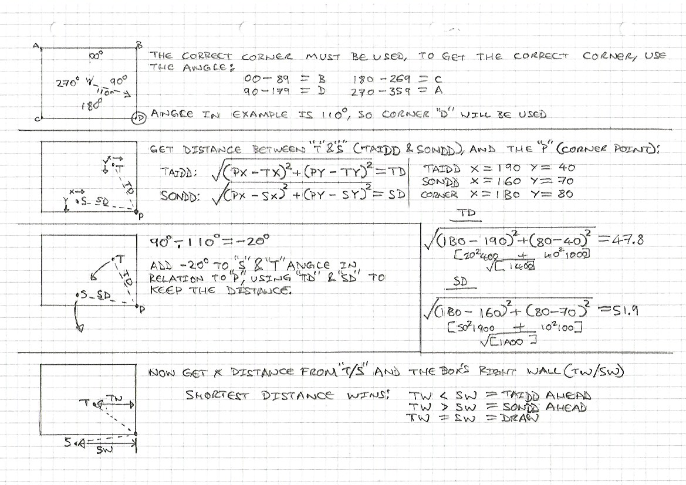
Natsumi
2017/04/18
coool
we could make tails as tall as Sonic to make it more fair
MarkeyJester
2017/04/18
That would be more appropriate.
There were times in the original for Sonic 2, where you didn't quite make a ledge, but I did, because, while I was being shot into the air by some device (NOT in ball mode), you spawned at the same X and Y position as I was, the same speed, etc. But your height is a little higher, so you didn't make the ledge, but I did.
Natsumi
2017/04/18

A tiles left for the arrows
MarkeyJester
2017/04/18
We can have a 3x3 tile arrow, and DMA the correct diraction in.
Natsumi
2017/04/18
yeah unless we want to use multiple ones
MarkeyJester
2017/04/18
2x3 then =3
Still need 2 tiles...
Hmmm... looks at the "S" in "RINGS" >=)
Natsumi
2017/04/18
haha derp
I'll fix that
MarkeyJester
2017/04/18
...I was joking, as in getting the two tiles from that S, since the Sonic 1 proto had "RING" with no S>
It's actually broken?
Natsumi
2017/04/18
wait no
S3K reuses it properly
I can overwrite TIME
MarkeyJester
2017/04/18
OK.
Natsumi
2017/04/18
12 tiles now
MarkeyJester
2017/04/18
=3
Problem solved~